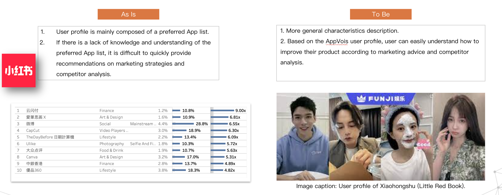
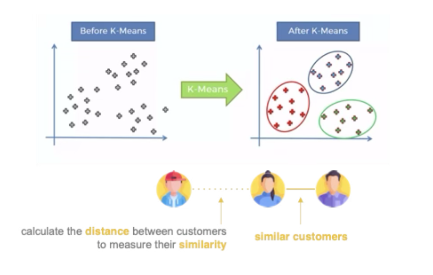

Automatically generates detailed audience personas, group labels, and actionable insights using large language models and behavioral data (RAG-like).
About Me
I am a Data Analyst with nine years of experience crafting production-ready BI platforms, LLM-powered applications, ML-based customer segmentation, and scalable ETL pipelines that turn data into business impact.
Projects
Work Highlight Projects
ML Side Projects
LLM-powered Audience Persona

Multi-Modal LLM Report Summarizer
Leverages multi-modal data to enable LLMs to read reports, extract key findings, and deliver insights automatically.

ML-based Customer segmentation
Applied K-means clustering to segment customers into lifestyle-based personas for deeper audience understanding.

BI solutions
Delivered BI solutions covering app audience insights, advertising footfall attribution, skincare audience profiling, and beauty advisor engagement analysis.

Credit Card Fraud Detection (Course Project)
Built decision tree and SVM models to detect credit card fraud, achieving a ROC-AUC score exceeding 95%.
Titanic Survival Prediction (Course Project)
Predicting Titanic passenger survival with scikit-learn pipelines, comparing Logistic Regression and Random Forest models with preprocessing and grid-search tuning.
Weather Prediction (Course Project)
Predicting rainfall in Australia using engineered features and tuned Random Forest/Decision Tree pipelines for interpretable weather classification.
ML Side Projects (Archive)
An archive of my early machine learning projects and Python learning notes.
Skills & Technologies
- Python
- SQL
- BigQuery
- Tableau
- Google Cloud Platform
- OpenAI
- Scikit-learn
- Git
- Shell
- R
Certifications
| Certification | Date |
|---|---|
| Machine Learning with Python | July 2025 |
| Python for Data Science, AI & Development | Sep. 2024 |
| Developing AI Applications with Python and Flask | July 2024 |
| Google Cloud Big Data and Machine Learning Fundamentals | Feb. 2024 |
| TOEIC Reading and Listening Test score 975 | April 2015 |